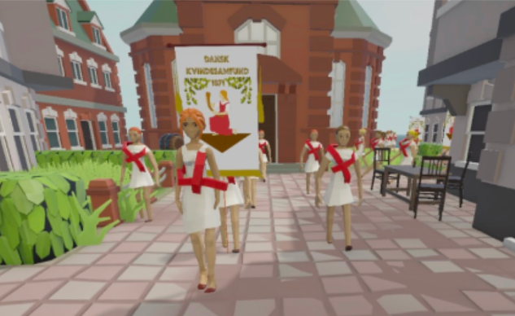
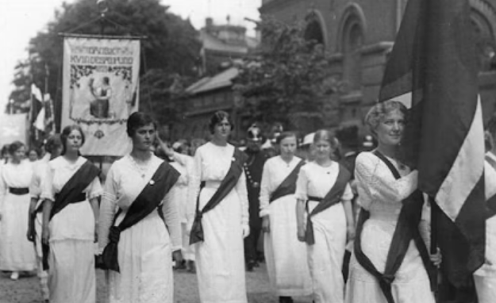

Learning history through interaction
The project is a narrative-driven learning game about the fight for women's suffrage in Denmark from 1896 to 1918. Designed for students in 7th–9th grade, the player follows Agnes through a third-person perspective and experiences important historical events and years through her story, choices and interactions.
The game combines narrative, gameplay and minigames that challenge players on the historical knowledge they have acquired throughout the experience.


Narrative
Follow Agnes through the events leading up to women's suffrage in Denmark.
Exploration
Explore the environment and interact with characters, objects and events.
Minigames
Test the historical knowledge gained throughout the experience.
Historical events
Experience key moments from 1896 to 1918 through Agnes' story.